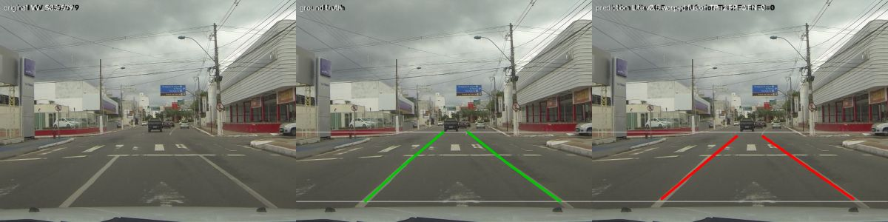
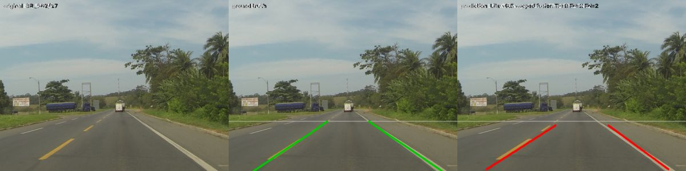

TAC-UFLD pilot results
UFLD (ResNet-18) and a lightweight CNN, each with temporal variants that fuse the two previous frames, trained on the ELAS ego-lane dataset and tested on three road scenes never used for training or model selection.
What the pilot shows
- The pipeline runs end to end on the GPU. Six models × two seeds were trained, selected and tuned on validation only, and tested on held-out and seen scenes in 2 h 22 min on an RTX 3050 (exit code 0,
results/elas_pilot/report/REPORT.md). - On the three held-out roads, the lite models are far ahead: lane F1 @ IoU 0.5 is 0.395 ± 0.137 for Lite v0.5 and 0.250 ± 0.005 for the lite baseline, against 0.043–0.057 for the four UFLD models. On seen-scene test blocks the same models reach 0.63 / 0.51 and 0.14–0.20.
- The UFLD models overfit within one epoch. For every UFLD run the best validation epoch is the first; by epoch 3 the training loss has fallen about tenfold while the validation loss rises. Before the full run, test regularisation and augmentation (
configs/ablations/augmentation.yaml); the full run's HPO also searches the learning rate and weight decay. - The temporal UFLD variants do not beat their baseline here (Δ lane F1 −0.007 to −0.014). Replacing their history by the current frame changes F1 by less than 0.003, so at this budget the fusion contributes nothing measurable.
- Lite v0.5's lead over the lite baseline (+0.145 on held-out scenes, both seeds) is mostly extra training, not temporal information. Its history frames add only +0.017 (history ablation). The lite baseline was still improving at its last epoch, and v0.5 then trained four more epochs from it. The full run (up to 50 epochs with early stopping) is needed to separate the two effects.
- On ELAS, precision = recall = F1 for every model. Both ego lanes are annotated in essentially every frame and every model predicts both, so each misplaced lane counts once as a false positive and once as a false negative. Lane errors on ELAS are localisation errors.
- Deployment preserves accuracy. ONNX (FP32) and TensorRT (FP32/FP16) engines on the RTX 3050 reproduce PyTorch's validation lane F1 exactly on 240 frames; calibrated INT8 changes it by −0.015 to +0.004 (TensorRT INT8: −0.002 to +0.002). Caching history features halves a temporal model's compute (about 16 → 8 ms on the RTX 3050); CPU preprocessing (about 9 ms) is now the largest cost.
- Two seeds cannot support any claim. Every paired test is flagged
underpowered(the smallest attainable p-value with 2 seeds is 0.5). Conclusions need the full protocol: 6 seeds, HPO with equal budgets, up to 50 epochs (configs/elas.yaml).
Lane F1 on unseen roads
CULane-style lane F1: each lane drawn 12 px wide (30 px at 1640 px, scaled to 640 px), matched one-to-one, correct when IoU ≥ 0.5. Post-processing tuned on validation only. On ELAS every model predicts both ego lanes in every frame, so precision = recall = F1: the errors are misplaced lanes, not missed ones.
Held-out test scenes (unseen roads)
Seen-scene test blocks
Held-out test scenes, all metrics (mean ± std over seeds)
| Model | Lane F1 @0.5 | Lane F1 @0.35 | Pixel F1 | Anchor F1 | Jitter px | FP | FN |
|---|---|---|---|---|---|---|---|
| UFLD baseline | 0.057 ± 0.037 | 0.122 ± 0.058 | 0.196 ± 0.064 | 0.326 ± 0.116 | 2.70 ± 0.22 | 4916 ± 194 | 4916 ± 194 |
| UFLD v0.2 weighted | 0.045 ± 0.053 | 0.089 ± 0.100 | 0.166 ± 0.097 | 0.292 ± 0.143 | 2.75 ± 0.27 | 4978 ± 278 | 4978 ± 278 |
| UFLD v0.3 gated | 0.043 ± 0.041 | 0.101 ± 0.086 | 0.177 ± 0.093 | 0.289 ± 0.141 | 3.70 ± 0.55 | 4987 ± 212 | 4987 ± 212 |
| UFLD v0.4 coord | 0.049 ± 0.058 | 0.110 ± 0.107 | 0.182 ± 0.114 | 0.304 ± 0.189 | 2.68 ± 0.60 | 4954 ± 302 | 4954 ± 302 |
| Lite baseline | 0.250 ± 0.005 | 0.468 ± 0.018 | 0.464 ± 0.004 | 0.651 ± 0.005 | 2.42 ± 0.11 | 3910 ± 24 | 3910 ± 24 |
| Lite v0.5 warped | 0.395 ± 0.137 | 0.583 ± 0.112 | 0.533 ± 0.059 | 0.728 ± 0.055 | 2.72 ± 0.06 | 3152 ± 712 | 3152 ± 712 |
Seen-scene test
| Model | Lane F1 @0.5 | Lane F1 @0.35 | Pixel F1 | Anchor F1 | Jitter px | FP | FN |
|---|---|---|---|---|---|---|---|
| UFLD baseline | 0.203 ± 0.061 | 0.358 ± 0.046 | 0.383 ± 0.058 | 0.555 ± 0.084 | 2.69 ± 0.17 | 1002 ± 76 | 1002 ± 76 |
| UFLD v0.2 weighted | 0.136 ± 0.089 | 0.232 ± 0.107 | 0.301 ± 0.087 | 0.467 ± 0.103 | 3.09 ± 0.01 | 1086 ± 112 | 1086 ± 112 |
| UFLD v0.3 gated | 0.176 ± 0.023 | 0.313 ± 0.020 | 0.351 ± 0.029 | 0.519 ± 0.036 | 3.81 ± 0.01 | 1036 ± 28 | 1036 ± 28 |
| UFLD v0.4 coord | 0.177 ± 0.107 | 0.285 ± 0.118 | 0.337 ± 0.104 | 0.502 ± 0.142 | 3.00 ± 0.31 | 1034 ± 134 | 1034 ± 134 |
| Lite baseline | 0.511 ± 0.007 | 0.668 ± 0.010 | 0.596 ± 0.010 | 0.782 ± 0.011 | 2.65 ± 0.13 | 615 ± 8 | 615 ± 8 |
| Lite v0.5 warped | 0.630 ± 0.055 | 0.772 ± 0.034 | 0.670 ± 0.020 | 0.846 ± 0.016 | 2.86 ± 0.06 | 466 ± 69 | 466 ± 69 |
Does temporal context help?
Each temporal model is compared with the single-frame model of its own family on the same seeds (exact Wilcoxon, Holm correction). Two seeds can never reach p < 0.05, so no difference here is a finding yet. The second table replaces the history frames by the current frame at test time: it isolates what the history itself contributes.
| Temporal model | Paired with | Seeds | Δ lane F1 | 95 % CI | Wilcoxon p | Holm p | Verdict |
|---|---|---|---|---|---|---|---|
| UFLD v0.2 weighted | UFLD baseline | 2 | -0.012 | [-0.156, +0.132] | 0.500 | 1.000 | underpowered |
| UFLD v0.3 gated | UFLD baseline | 2 | -0.014 | [-0.044, +0.017] | 0.500 | 1.000 | underpowered |
| UFLD v0.4 coord | UFLD baseline | 2 | -0.007 | [-0.193, +0.178] | 1.000 | 1.000 | underpowered |
| Lite v0.5 warped | Lite baseline | 2 | +0.145 | [-1.124, +1.414] | 0.500 | 1.000 | underpowered |
| Temporal model | F1 gain from real history | Seeds |
|---|---|---|
| Lite v0.5 warped | +0.0166 | 2 |
| UFLD v0.2 weighted | -0.0024 | 2 |
| UFLD v0.3 gated | +0.0002 | 2 |
| UFLD v0.4 coord | -0.0025 | 2 |
Training curves
Temporal models start from their family baseline's best checkpoint. The UFLD models peak at their first epoch and then overfit (training loss keeps falling while validation gets worse); the lite models were still improving when the 4-epoch pilot budget ended.
UFLD baseline
UFLD v0.2 weighted
UFLD v0.3 gated
UFLD v0.4 coord
Lite baseline
Lite v0.5 warped
Streaming on a held-out road
240 consecutive frames of scene BR_S02 (never seen in training), run frame by frame through the streaming detector: left UFLD baseline, right Lite v0.5 with cached history features. Red = ego-left slot, yellow = ego-right slot, numbers = mean existence probability of each lane; the header shows the history frames used and the latency split.
Latency and real-time budgets
Measured at batch 1 on NVIDIA GeForce RTX 3050 with 640×480 frames of the held-out clip. "cached" reuses the stored features of previous frames; "recompute" re-encodes all three frames every time. Preprocessing (a PIL bilinear resize on the CPU, identical to training) is now the largest cost.
Simulated 30 FPS camera: service times = measured × slowdown. The Jetson slowdowns are assumptions from peak-throughput ratios, not measurements on a Jetson. "History fallbacks" are frames whose history frames were skipped because the worker was busy.
| Profile | Slowdown | Model | Mode | Processed FPS | p95 latency ms | History fallbacks | Budgets |
|---|---|---|---|---|---|---|---|
| desktop | ×1.0 | UFLD baseline | single | 30.0 | 22.3 | 0 % | met |
| desktop | ×1.0 | UFLD v0.2 weighted | cached | 30.0 | 22.0 | 0 % | met |
| desktop | ×1.0 | UFLD v0.2 weighted | recompute | 30.0 | 30.1 | 0 % | met |
| desktop | ×1.0 | UFLD v0.3 gated | cached | 30.0 | 22.6 | 0 % | met |
| desktop | ×1.0 | UFLD v0.3 gated | recompute | 30.0 | 30.3 | 0 % | met |
| desktop | ×1.0 | UFLD v0.4 coord | cached | 30.0 | 21.7 | 0 % | met |
| desktop | ×1.0 | UFLD v0.4 coord | recompute | 30.0 | 38.5 | 0 % | met |
| desktop | ×1.0 | Lite baseline | single | 30.0 | 18.2 | 0 % | met |
| desktop | ×1.0 | Lite v0.5 warped | cached | 30.0 | 24.1 | 0 % | met |
| desktop | ×1.0 | Lite v0.5 warped | recompute | 30.0 | 33.7 | 0 % | met |
| jetson_agx_orin_assumed | ×1.7 | UFLD baseline | single | 29.0 | 50.4 | 0 % | missed |
| jetson_agx_orin_assumed | ×1.7 | UFLD v0.2 weighted | cached | 28.7 | 59.1 | 4 % | missed |
| jetson_agx_orin_assumed | ×1.7 | UFLD v0.2 weighted | recompute | 24.9 | 75.4 | 18 % | missed |
| jetson_agx_orin_assumed | ×1.7 | UFLD v0.3 gated | cached | 28.4 | 61.3 | 5 % | missed |
| jetson_agx_orin_assumed | ×1.7 | UFLD v0.3 gated | recompute | 24.2 | 77.2 | 21 % | missed |
| jetson_agx_orin_assumed | ×1.7 | UFLD v0.4 coord | cached | 29.0 | 51.6 | 3 % | missed |
| jetson_agx_orin_assumed | ×1.7 | UFLD v0.4 coord | recompute | 25.2 | 74.2 | 17 % | missed |
| jetson_agx_orin_assumed | ×1.7 | Lite baseline | single | 29.0 | 33.8 | 0 % | met |
| jetson_agx_orin_assumed | ×1.7 | Lite v0.5 warped | cached | 27.2 | 68.8 | 10 % | missed |
| jetson_agx_orin_assumed | ×1.7 | Lite v0.5 warped | recompute | 20.5 | 85.8 | 33 % | missed |
| jetson_orin_nano_assumed | ×7.0 | UFLD baseline | single | 7.8 | 186.5 | 0 % | missed |
| jetson_orin_nano_assumed | ×7.0 | UFLD v0.2 weighted | cached | 7.6 | 196.5 | 82 % | missed |
| jetson_orin_nano_assumed | ×7.0 | UFLD v0.2 weighted | recompute | 6.1 | 218.1 | 85 % | missed |
| jetson_orin_nano_assumed | ×7.0 | UFLD v0.3 gated | cached | 7.4 | 200.6 | 79 % | missed |
| jetson_orin_nano_assumed | ×7.0 | UFLD v0.3 gated | recompute | 5.8 | 228.7 | 92 % | missed |
| jetson_orin_nano_assumed | ×7.0 | UFLD v0.4 coord | cached | 7.5 | 202.6 | 79 % | missed |
| jetson_orin_nano_assumed | ×7.0 | UFLD v0.4 coord | recompute | 5.9 | 240.6 | 87 % | missed |
| jetson_orin_nano_assumed | ×7.0 | Lite baseline | single | 9.4 | 168.7 | 0 % | missed |
| jetson_orin_nano_assumed | ×7.0 | Lite v0.5 warped | cached | 7.7 | 199.3 | 80 % | missed |
| jetson_orin_nano_assumed | ×7.0 | Lite v0.5 warped | recompute | 5.8 | 243.9 | 87 % | missed |
Export and precision checks
Each exported model runs the same frames as PyTorch through the same streaming code. Val lane F1 is measured on 240 validation frames with the exact training-time temporal context; the difference to PyTorch FP32 is in brackets. TensorRT ran on the development GPU, not on a Jetson.
| Model | Backend | max |Δ logits| | max |Δ exist| | mean lane Δx px | Val lane F1 | Numerics |
|---|---|---|---|---|---|---|
| Lite v0.5 warped | onnxruntime fp32 | 7.6e-06 | 3.6e-07 | 0.00 | 0.5636 (+0.0000) | within tolerance |
| Lite v0.5 warped | onnxruntime int8 | 7.6e-06 | 6.4e-02 | 1.36 | 0.5570 (-0.0066) | outside tolerance |
| Lite v0.5 warped | tensorrt fp32 | 1.8e-03 | 1.2e-04 | 0.00 | 0.5636 (+0.0000) | outside tolerance |
| Lite v0.5 warped | tensorrt fp16 | 5.9e-02 | 1.3e-03 | 0.01 | 0.5636 (+0.0000) | outside tolerance |
| Lite v0.5 warped | tensorrt int8 | 1.3e-02 | 2.1e-02 | 0.36 | 0.5658 (+0.0022) | outside tolerance |
| UFLD baseline | onnxruntime fp32 | 2.4e-06 | 3.0e-07 | 0.00 | 0.1732 (+0.0000) | within tolerance |
| UFLD baseline | onnxruntime int8 | 3.5e-01 | 3.6e-02 | 2.29 | 0.1776 (+0.0044) | outside tolerance |
| UFLD baseline | tensorrt fp32 | 4.7e-04 | 6.4e-05 | 0.00 | 0.1732 (+0.0000) | within tolerance |
| UFLD baseline | tensorrt fp16 | 8.7e-03 | 6.2e-04 | 0.02 | 0.1732 (+0.0000) | within tolerance |
| UFLD baseline | tensorrt int8 | 1.7e-01 | 1.7e-02 | 0.54 | 0.1732 (+0.0000) | outside tolerance |
| UFLD v0.2 weighted | onnxruntime fp32 | 1.4e-06 | 1.8e-07 | 0.00 | 0.0789 (+0.0000) | within tolerance |
| UFLD v0.2 weighted | onnxruntime int8 | 1.4e-06 | 5.1e-03 | 0.72 | 0.0636 (-0.0154) | outside tolerance |
| UFLD v0.2 weighted | tensorrt fp32 | 5.5e-04 | 2.5e-05 | 0.00 | 0.0789 (+0.0000) | within tolerance |
| UFLD v0.2 weighted | tensorrt fp16 | 5.7e-03 | 3.7e-04 | 0.01 | 0.0789 (+0.0000) | within tolerance |
| UFLD v0.2 weighted | tensorrt int8 | 6.9e-04 | 1.0e-02 | 0.41 | 0.0768 (-0.0022) | outside tolerance |
Examples from the held-out scenes




Reproduce and continue
python -m tac_ufld doctor python -m pytest -q python -m tac_ufld run --config configs/elas_pilot.yaml # this pilot, about 2.5 h on an RTX 3050 python -m tac_ufld run --config configs/elas.yaml --confirm # full protocol: 6 seeds, HPO, up to 50 epochs python -m tac_ufld ui # inspect checkpoints and results python -m tac_ufld site --runs results/elas_pilot # rebuild this page
The full experiment differs from this pilot in seeds (6 instead of 2), epochs (up to 50 with patience 10 instead of 4 with patience 2) and hyper-parameter search (20 trials per model, the same budget for every model). Only the full run can support claims.